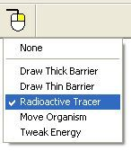

VOLVE 4.0
VOLVE 4.0
Right Click Tools
Clicking on the the  button will show a menu of possible
modes that can be assigned to the right mouse button. This menu includes these options:
button will show a menu of possible
modes that can be assigned to the right mouse button. This menu includes these options:

A checkbox indicates the currently active right click tool. These options are also selectable from the main menu Edit >> Right Click Tool.
None
By default no right click behavior is specified. Whenever the simulator is started the right click tool is reset to "none".
Draw Thick Barrier
This will cause the right mouse button to draw a thick barrier inside of the simulation window. See the section on barriers for more information.
Draw Thin Barrier
This will cause the right mouse button to draw a thin barrier inside of the simulation window. See the section on barriers for more information.
Radioactive Tracer
The right mouse button can be used to mark organisms with a radioactive tracer. See the section on Radioactive Tracers for more information.
Move Organism
The right mouse can be used to move organisms around. See the section Moving Organisms for more information.
Tweak Energy
Lets you modify the amount of energy for organisms, spores and organic material. See the section on Tweak Energy for more information.